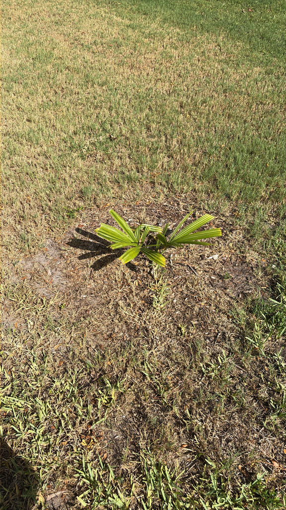

- This palm flowers exactly once in its entire life — and that single event, after 30 to 80 years of silent growth, produces the largest branched inflorescence of any plant on Earth, a spike rising 20 to 26 feet above the crown bearing up to 24 million individual blooms. Then the palm dies, completely spent.
- Before paper reached South Asia, the leaves of this palm were the book. For more than a millennium, scribes in India and Sri Lanka boiled, dried, and polished the fronds into ola leaves, then incised Buddhist scriptures and legal texts with a metal stylus. Some of those manuscripts survive today.
- A specimen that looks like a quiet, ordinary fan palm could easily be 50 years old — secretly counting down to its one spectacular moment with zero outward warning.
The Talipot Palm is native to eastern and southern India — particularly the Malabar Coast — and Sri Lanka, where it grows in moist tropical lowlands below about 2,000 feet elevation. It thrives in monsoonal climates with distinct wet and dry seasons, often on plains and alongside watercourses.
Unusually for such a well-known palm, it occupies a strange botanical twilight zone: it does not exist as a genuinely wild plant. Every known stand is cultivated or naturalized near human settlement.
Human societies have tended, transplanted, and depended on this palm for roofing, manuscript leaves, and sunshades for so many thousands of years that its original wild baseline has effectively vanished from history.
It has been cultivated across tropical Asia for centuries — Cambodia, Myanmar, Thailand, and Mauritius all have established groves — and arrived in Florida as a prized botanical-garden specimen. It is restricted to South Florida and the warmest parts of Central Florida, grown as an extraordinary living curiosity rather than a common landscape tree.
- The word 'monocarpic' means flowering once then dying, and the Talipot Palm carries this strategy to its logical extreme. For anywhere from three to eight decades it simply grows — building a massive trunk packed with starch reserves — then converts every bit of that stored energy into a terminal flower spike that towers 20 to 26 feet above the crown.
- It literally transforms its entire physical body into its final generation.
- That spike holds up to 24 million small, creamy-white flowers and holds the Guinness World Record for the largest branched inflorescence of any plant on Earth.
- For context: the titan arum (Amorphophallus titanum) holds the record for the largest unbranched inflorescence, and Rafflesia arnoldii has the largest single flower — but for sheer branched flowering structure, nothing tops this palm. Once the fruits ripen, the palm is gone.
- The genus name Corypha comes from the Greek for 'summit' or 'crown,' a reference to the terminal position of the inflorescence at the very top of the trunk. The species epithet umbraculifera means 'umbrella-bearing' in Latin — a nod to the vast, circular fronds that have literally been used as umbrellas and sunshades across South Asia for centuries.
- In its home range the palm has a long record of practical use beyond the manuscript tradition. The trunk yields an edible starch that can be processed into flour, the young leaf shoots have been eaten as a vegetable, and the enormous fronds have served as roofing, thatching, and fans. It is, by any measure, one of the more useful palms in tropical Asia.
When a Talipot Palm finally flowers after its decades-long wait, that massive, multi-million-flower bloom becomes an ecological epicenter, drawing in bees, flies, and other generalist pollinators in large numbers — an event of real local impact given the sheer scale of the structure.
In Florida cultivation the palm's everyday wildlife contributions are modest. It is a non-native species with no co-evolutionary history with local fauna and is not a documented larval host for any Florida butterfly or moth. Birds may investigate the ripening fruits, but this palm is far too rare in cultivation here to function as a meaningful food resource.
Its chief ecological moment is that singular, spectacular bloom.
The Talipot Palm is monocarpic: it flowers once, fruits once, and then dies. The palm spends 30 to 80 years in purely vegetative growth before triggering its single reproductive event. Propagation is by seed only; the palm produces no offshoots or suckers.
The inflorescence is a terminal panicle — it erupts from the very top of the trunk, above and through the crown of fronds, signaling the end of the palm's life. The branched spike reaches 20 to 26 feet in length and bears between one and several million small, creamy-white to pale yellow hermaphrodite flowers.
Both male and female parts are present in each flower, so a single palm can set seed without a second individual nearby.
After flowering, the palm produces thousands of round, yellow-green to dark green fruits roughly 1 to 1.5 inches in diameter, each containing a single seed. Fruit takes approximately one year to mature. Once fruiting is complete, the palm dies.
Costapalmate — the large, circular fan blade is reinforced by a stiff central rib extending from the petiole into the leaf, bowing it into a shallow dome rather than a flat disc. A mature frond can reach 16 feet across and carries up to 130 rigid leaflets. Petioles grow up to 13 feet long and carry small marginal teeth.
The fronds are deep green and retain the old leaf bases on the upper trunk for years before they eventually drop.
Solitary, straight, and cylindrical, with a diameter of roughly 3 to 4 feet at maturity. The upper trunk is obscured for years by persistent, boot-like leaf base remnants; lower down, where old fronds have shed, the trunk shows prominent horizontal ring scars. In very old specimens the trunk can reach heights of 80 feet or more.
Absorb the scale first — a single mature frond can reach 16 feet across, among the largest undivided leaves in the entire plant kingdom. A palm that looks like a quiet giant could easily be 50 years old, secretly counting down to its one spectacular moment with no outward warning.
Look at the upper trunk for the stacked, clasping leaf bases still clinging where old fronds attached; lower on the trunk, where earlier fronds eventually fell, you will find stark horizontal ring scars marking each decade of growth. If you are fortunate enough to see this palm in bloom, the inflorescence rises well above the crown like a second, taller tree made entirely of flowers.
In fruit, look for dense clusters of golf-ball-sized green spheres hanging in the upper canopy.
Watch the petioles — the massive leaf stalks carry small marginal teeth that will easily scrape skin if you brush against them while working close to the fronds. The trunk contains a starch historically processed into flour in South Asia, but extracting it requires felling and destroying the palm, so it is not a visitor concern.
No toxicity to people or dogs has been documented, and the fruits are not a practical food source — otherwise this is a harmless plant to be around.
The common name 'Century Palm' overstates the lifespan but captures the spirit — this palm genuinely may grow for half a century or more before it ever flowers. A specimen that has not yet bloomed could be decades old with no outward sign that its moment is approaching.
Because it is known only from cultivation and not from truly wild populations, the Talipot Palm occupies an unusual position in botany: a species whose entire documented existence has been intertwined with human management. What its natural habitat and range once looked like, before millennia of human use, is largely unknown.


- © Ruby Meador (CC-BY-NC), via iNaturalist
- © Randall Carter (CC-BY-NC), via iNaturalist